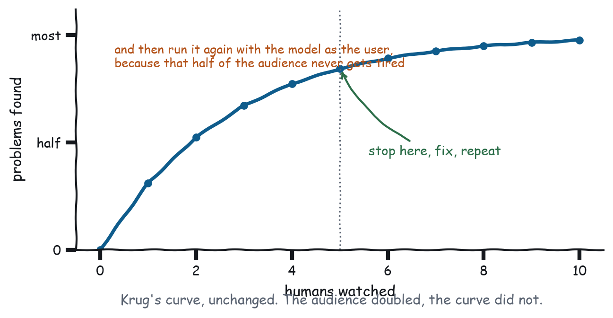

Chapter 11
Testing on Ten Prompts a Day
Five humans and an afternoon, plus the half that is new: does the model use your app correctly.
Krug’s testing chapter is the most useful thing he wrote, and the argument was about economics rather than method. Elaborate usability testing is expensive, so it happens once, late, when nothing can be changed. Cheap testing is worth more than good testing, because cheap testing actually happens. His numbers were three to five users, one morning a month, watched by whoever could be dragged into the room, which finds most of what an expensive study finds at about one percent of the cost and early enough to act on.

All of that transfers unchanged. Then this medium doubles the audience, and the second half of it can be tested on every commit.
The human half, unchanged
Five people, three tasks, one afternoon, somebody watching. Recruit loosely, because Krug’s finding that the “wrong” users still find most problems holds here and you are looking for interface failures, not domain expertise. Give tasks, not instructions, so “find out whether we can get out of the Northwind contract early” is a task while “click the find clause button” is a rehearsal. Watch and do not help, because the urge to explain is overwhelming and it destroys the data: every explanation you give in the room is one you cannot give in production. Ask them to think aloud, which matters more here than on the web because half the interaction is what they typed and you need to hear what they expected the assistant to do with it. And stop after each session to fix something, because five sessions and one fix at the end is worse than five sessions with four fixes in between.
Three things to watch for are specific to chat. What did they type, verbatim, because if nobody phrases the request the way your tool description expects then your app will not get invoked in the wild, and that is a finding about your description rather than about your user. Did they notice the widget, because in a scrolling transcript on a phone a render can be missed entirely, and if they scrolled past it and typed a follow-up question instead, that is the answer to Chapter 1’s first question arriving without you having to ask it. And did they touch the controls, because a control nobody touches in five sessions is a control you can delete, which is the cheapest deletion criterion in the book.
What five sessions actually look like
The advice above is easy to agree with and easy to not do, so here is the shape of an afternoon that has actually happened, compressed.
In session one the user types “compare these loans”. The tool does not fire; the model answers in prose from numbers already in the conversation. That is finding number one, and it is not a bug in the widget. It is the description failing to say that this tool is for when the answer should be adjustable, so between sessions you add the trigger sentence. In session two the widget fires, the user reads the headline, says “so the credit union”, and moves on without touching the slider, which raises the possibility that the slider is not earning its place; not yet actionable, because one person is not data. In session three the same thing happens except this user drags the slider immediately and says “oh, that changes it”, which makes finding two interesting rather than damning, and the difference between those two users is worth understanding, not averaging.
In session four the user asks a follow-up, “what was the monthly on the Northbank one?”, and the model answers correctly because the monthly is in structuredContent. That is not a finding; it is a control passing, and it is worth noticing when something works, because otherwise every session produces a list of complaints and no map of what to protect. Then in session five the user scrolls back to the render twenty minutes later and reads the old numbers as current, which is finding three and which is the Chapter 7 problem, found in the wild in about four seconds.
Three findings, two fixes, one open question, one afternoon. That is a normal yield, and it is why the method survives contact with a schedule.
The new half: the model as a user
Now the part with no precedent, and the part you can run every commit. Your other user can be tested automatically, at scale, without recruiting anybody, because it is software. And it needs testing more than the human does, because you never watch it use your app: you watch the transcript afterwards and infer what happened.
There are three questions, and they map onto the three ways an app fails its second user.
Invocation is the first. Given a prompt that should use your app, does the model use it, and given one that should not, does it stay away? Under-invocation is the common failure and it is nearly always the description: the tool is fine, the app is beautiful, and the model never reaches for it because the description says what the tool is instead of when to use it. Over-invocation is rarer and more annoying, because a tool described too broadly gets called for everything and now every conversation has a widget in it.
Argument quality is the second. When the model does call, does it pass what it knows? This is Law 3 measured: if the conversation contained the date and the model called your tool without it, you have found either a missing schema property or a property whose description does not say what goes in it.
Readback is the third. After the render, can the model answer questions about what happened? Ask a follow-up that depends on the widget’s state, and if the answer is wrong or hedged, your write-back is missing or too thin. This is the check that catches Figure 2-1, and it catches it in about four seconds.
The harness that runs without a model
Before you spend anything on model-in-the-loop runs, there is a tier of checks that need no model at all, run in under a second, and catch most of what goes wrong. The gallery ships them in gallery/evals/checks.js, and each one is a question the model would ask about your tool, expressed as a grep.
Does the description say when to use this, checked with a regex for use when, when the user, call this when, which is crude and which works, because a description with no trigger clause is a description that never says when. Does the tool have more than one address, since an empty properties object means the model cannot re-summon a specific view and the app has to ask the user for everything, which is where Chapters 4, 7, and 8 all end up. Is the text answer an answer, since content under nine words is almost certainly a log line and “Loan analytics suite opened.” tells the model nothing it can use. Does an interactive app ever write back, because HTML that binds a click handler and never calls setContext has locked the second user out. And does anything that changes the world name a way back, which is Chapter 9’s requirement checked mechanically.
None of that is clever. All of it has caught something.
A worked session
Here is what happened the first time those checks ran against this book’s own gallery. The apps had just been written, by somebody who had just finished writing the chapters telling you not to make these mistakes. The run below is a record of that afternoon; the gallery has grown a tool since, so the totals in your own run will differ.
Recorded output from node gallery/evals/run.js --all, from a state this repository has moved past
21 tools checked, 20 error(s), 15 warning(s)Twenty errors. Some of the findings, verbatim:
Recorded output from node gallery/evals/run.js --all, from a state this repository has moved past
FAIL service_status [empty-schema] no input properties, so the model cannot
re-summon a specific view and the app must ask the user
for everything
FAIL submit_expense [log-line] content reads as a log line rather than an
answer: "Expense EXP-91909 submitted. Void it with
void_expense."
FAIL pick_flight [no-trigger] description never says when to reach for
this tool
warn submit_expense [bare-property] property "amount" has no description,
enum, or defaultThree of those are worth dwelling on. service_status had an empty input schema, and it is the chapter-3 exhibit of doing a dashboard right, so the book’s own example of good work could not be scoped to a service, which means “just show me checkout” produced the whole platform and Chapter 7’s re-render contract failed on the page that was arguing for it. submit_expense returned a sentence that reads fine to a person and tells the model nothing about what was filed: the amount, the merchant, and the date were all in structuredContent and none of them were in the text, so a host without the extension got a receipt number and no receipt. And pick_flight had a good description that never said when to use it, managing to say what not to do, do not call this before origin, destination, and date are known, without ever saying what to do.
Fixing all twenty took about forty minutes and touched only descriptions, schemas, and content strings. Not one pixel changed, which is the shape of this work in general: the second user’s entire interface is text, so its bugs are text bugs, and text bugs are cheap.
Captured output from node gallery/evals/run.js --all
22 tools checked, 0 error(s), 0 warning(s)The model-in-the-loop tier
The checks above are a filter. They tell you a description has no trigger clause; they cannot tell you whether the trigger clause works. For that you need a model, a prompt suite, and a host, and the cheap version is a headless run against a host you already have.
Illustrative, not from the gallery
claude -p "Using only the gallery MCP server, answer in exactly two lines: \
which lender is cheapest over five years and the total, and whether that \
changes at three years." \
--allowedTools "mcp__gallery__compare_rates_text"Captured output from claude -p
Cedar Credit Union is cheapest over five years at $34,835 total (vs. Harbor
Direct $34,965 and Northbank $35,000).
Yes, it flips at three years: Northbank wins at $34,130 ... Cedar's $1,400 in
fees only pays off over a longer horizon.That is an invocation check, an argument check, and a readback check in one command, and it costs about ten cents.
Build a suite of ten prompts per app: five that should invoke it, phrased the way five different people would phrase it, three that should not including at least one near miss, and two that check readback after a render. Here is a real one, for the gallery’s flight picker.
Illustrative, not from the gallery
INVOKE "book me a flight to New York Thursday morning"
INVOKE "what are my options for getting to JFK on the 20th"
INVOKE "I need to be in New York by lunchtime Thursday"
INVOKE "sort out the travel for the Thursday meeting, economy, just me"
INVOKE "same as last time but Thursday" (context in earlier turns)
SKIP "how much do flights to New York usually cost" (a question, not a booking)
SKIP "cancel my Thursday flight" (a different tool)
SKIP "what is the baggage allowance on United" (answerable from context)
READBACK "which one did I pick?" (after a selection)
READBACK "what time does it land?" (needs structuredContent)The third and fifth are the interesting ones. Neither mentions a flight, an airport, or a date in the form your schema wants, and both are how people actually talk, so if your description only survives the first two phrasings it will get invoked in demos and not in use.
Running it for real
The gallery ships three suites, thirty prompts, in gallery/evals/prompts.json, and a runner that drives Claude Code against the server. The first full run cost $3.83 and produced this:
Recorded output from node gallery/evals/model.mjs, from a state this repository has moved past
invoked 12/15
skipped 7/9Three of the five compare_rates failures looked identical, and they were the most useful thing the run produced.
Asked which of these is cheapest over five years?, the model called compare_rates_text, the prose tool, not the app. Asked work out the real cost of each of these, same. Asked sort out which loan I should take, same. The suite scored all three as failures.
The suite was wrong. Those are one-shot questions with no follow-up, which is precisely the case where Chapter 1 says prose wins, and the model was applying this book’s first law more faithfully than the test suite grading it. The app was correctly not chosen.
But there was a real bug underneath, and the eval found it by accident. The app’s description said use when the user asks which loan is cheapest, which is the one-shot phrasing, so the app was claiming a case that belongs to its sibling. Two descriptions changed: the app now says it is for exploring the comparison and names the text tool for one-shot answers, and the text tool says it owns the one-shot case. The suite gained a third category, prefer_sibling, for prompts where a different tool is the right answer, because “should not invoke” and “should invoke something else” are different findings and only one of them is a bug.
The other two failures were straightforwardly real. service_status was called for what was our uptime last quarter?, because its description said what it covers and never said what it does not; it now ends reports the current state only; it cannot answer questions about past periods. And find_clause was called for draft an email terminating the contract, which renders a viewer at somebody who asked for prose; its description now says so.
Three fixes, all of them strings, none of them pixels. Then the suite was run again, which is the part of the method people skip:
Recorded output from node gallery/evals/model.mjs, from a state this repository has moved past
invoked 15/15 (was 12/15)
skipped 8/9 (was 7/9)
sibling 1/3Every invoke phrasing now reaches the app, including the three new ones written to describe exploring instead of asking. The historical-question over-invocation is gone. And the new sibling category, the one that asks whether a one-shot question correctly reaches the prose tool, scores 1 out of 3: once the model answered from context with no tool at all, which is arguably more correct than the answer the suite wanted, and once it reached for the app anyway.
That last number is the honest state of this app, and it is not a triumph. It says the boundary between the two tools is still fuzzier than their descriptions claim, and that a reader copying this pattern should expect to iterate on it. find_clause also still renders a viewer at somebody who asked for an email to be drafted, which the description change did not fix.
The same suite, a second model
The same thirty prompts then went to a different model family. The scores were different in an instructive way, and one prompt failed on both:
Recorded output from node gallery/evals/openai.mjs, from a state this repository has moved past
Claude Code gpt-5-nano
invoked 15/15 13/15
skipped 8/9 9/9
sibling 1/3 2/3A failure that survives two model families is a description bug. A failure that appears on one is tuning. Appendix C has the full comparison, and the finding it produced, which was not the finding anybody wanted.
Which is what the two warnings below are about.
Two warnings
Model runs are not deterministic, so a single failure is noise; run the suite three times and look at rates, because a prompt that invokes correctly two times out of three is a description problem, not a flake. And record the prompts rather than the outputs, since outputs change with every model release while what you are testing is whether your description survives the paraphrase, which makes the prompt suite the durable artefact.
Appendix C has the runnable version of all of this: the session script, the prompt template, the static check list, the CI wiring, and one hard-won warning about what your eval subject is allowed to see.
The third kind of test
Two audiences, two test suites, and then a third thing that is neither: the widget itself. Nothing above tests whether your card renders correctly, because humans and models both test it indirectly, and indirect tests find layout bugs slowly and expensively.
The good news is that an MCP App is unusually testable, because it is one self-contained HTML document with a message-shaped interface. There is no server to stand up, no session to authenticate, and no navigation to drive. You can put it in a frame, post it a ui/tool-result, and assert on what comes out.
Three levels, and the first two cost almost nothing.
Does it parse and connect. The cheapest possible check, and the one with the best story behind it, which is a few paragraphs further down. check_apps.mjs parses every app’s script and asserts that it calls connect(), and it takes about eighty milliseconds to check seventeen apps.
Does it answer the messages it should. Post a result, read the DOM, assert. Post no result and assert the skeleton drew something. Post an error result and assert the failure state appeared. Post a result with an empty array and assert the empty state did. Those four assertions are the four states from Chapter 3, and writing them is how you find out that you only built one of them.
Does it look right. Screenshot it and compare. This is the expensive one and the one most likely to produce false failures, so scope it: capture the same scenes your book or your docs already capture, at the widths you claim to support, and diff. The gallery’s camera does this for figures already, which means the regression harness and the documentation pipeline are the same program. That is worth arranging deliberately, because a screenshot test nobody looks at rots, and a figure in a document gets looked at every time somebody reads it.
What to skip: unit tests of pure functions that live in your widget. If there are enough of them to be worth testing, they belong on the server, where both users can benefit from one implementation, and Chapter 2 has the argument.
What to fix first
Krug’s triage, adapted, in order. Things that make the model not call you come first, because nothing else matters if the app never renders, and this is almost always the description and almost always a missing trigger clause. Then things that make the model wrong afterwards, because a widget leaving the model with a stale or absent picture produces confident wrong answers, and confident wrong answers cost more trust than a missing feature ever will. Then things that make the human answer a question they already answered, since every re-ask found in a session is a schema property you did not declare. Then everything else.
Resist the urge to fix the visual problems first. They are the ones you can see, which is why they get fixed, and they are usually the ones that matter least.
What this book actually ran
A book about testing owes you a statement of which of its own advice it took.
The model-in-the-loop suite was run: three suites, thirty prompts, against Claude Code over MCP, twice, and the findings above are verbatim from those runs. The static checks run on every commit and are in CI. The widget checks run on every commit. Every figure in this book regenerates from the gallery, and three bugs in the gallery were found by drawing figures, not by testing.
No human sessions were run. Five people, three tasks, one afternoon: that half of this chapter is a method described and not a method executed. It is the half that finds what people misread, what they scroll past, and what they type instead of what you expected, and none of that is in this book because nobody watched anybody.
Take the numbers here as evidence about the second user only. The first user is still owed an afternoon.
What to remember
Five humans, three tasks, one afternoon, and fix something after each session. Then test the other user, which is cheaper because it never gets tired: does the model invoke you, does it pass what it knows, and can it answer afterwards. Most of that runs as static checks in under a second, and the rest costs about ten cents a run against a host you already have. And when the checks fail on your own examples, which they will, notice how many of the fixes turn out to be strings.
Next chapter: the same widget, in four houses that do not agree.